Bienvenue dans le monde du Blob 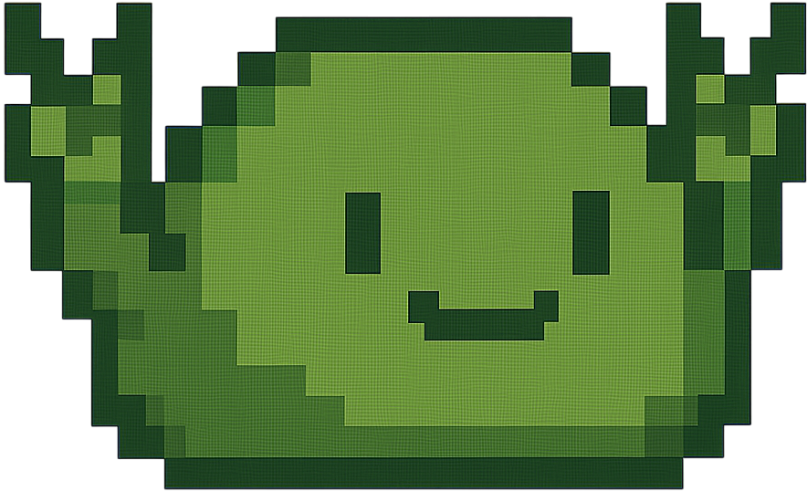
Incarnez un Blob affamé, sans emploi, mais déterminé à manger toutes les avoines d’un monde étrange (et probablement sans gluten). Un seul objectif : bouffer d’abord, poser des questions après.
Ou testez votre foi en la physique dans le mode Jump. Le Blob saute comme un ressort sous Red Bull, et vous priez pour ne pas finir sur un pique. Bonne chance.
Game Over, mon pauvre Blob !
Tu as perdu toutes tes vies. Le chemin de l'avoine est semé d'embûches, mais ne lâche rien !
Aide au Jeu : Le BloB
Présentation des Modes de Jeu :
Mode Aventure : C’est l’histoire d’un Blob, légèrement obsessionnel, dont le seul but dans la vie est de gober tous les flocons d’avoine d’un monde rempli de pièges mortels. Collectez-les tous pour avancer, mais attention : entre deux cuillères d’avoine, c’est surtout vous qui allez manger.
Mode Jump : Le mode qui rend fou. Le Blob saute tout seul comme s’il avait bu trois cafés. Vous, vous gérez la direction et la panique. Le but ? Monter. Encore. Toujours. Jusqu’à la chute. Une vraie métaphore de la vie… sauf qu’ici, les pics sont en pixels.
Commandes :
- ZQSD ou Flèches directionnelles : Parce que même un Blob mérite un GPS.
Z / Haut : Sauter. Parce que voler, c’est pas prévu dans le budget.
Q / Gauche : À gauche, là où il y a toujours un piège. Toujours.
D / Droite : À droite, c’est pareil, mais tu crois que c’est mieux. C’est pas mieux
Éléments du Jeu :
- Avoine (le flocon qui rend accro) : Ramasse-les toutes pour terminer un niveau en mode Aventure. C’est comme Pokémon, mais sans Pikachu, sans scénario, et avec plus de fibres.
- Vies (le compteur d’humiliation) Si vous les perdez toutes, c’est Game Over. Et vous verrez apparaître un Blob qui pleure. Vraiment. Enfin… dans votre tête.
- 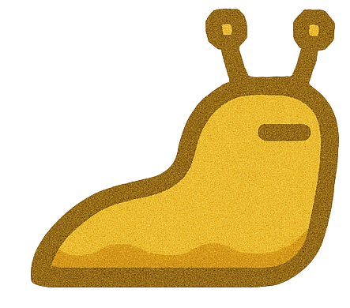 Limace (ennemi gluant non identifié): À éviter. Sérieusement. Même au resto. Si vous les touchez, vous perdez une vie et votre dignité.
- 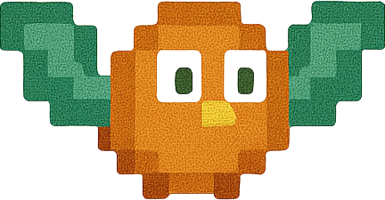 Oiseau (ennemi aérien, sans permis) Il vole. Il pique. Il ruine vos plans. Bref, l’oiseau vous déteste personnellement.
- 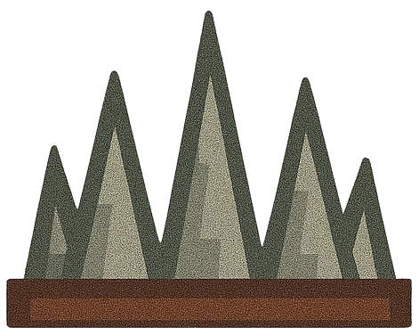 Pics (pas sympas) Touchez-les et c’est la punition immédiate. Comme un contrôle fiscal, mais avec du sang pixelisé
- 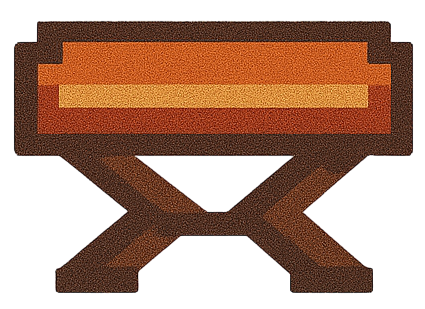 Trampoline (le coussin magique): Vous envoie très haut. Mais genre, très haut. Parfait pour les amateurs de sensations fortes et de chutes dramatiques.
- 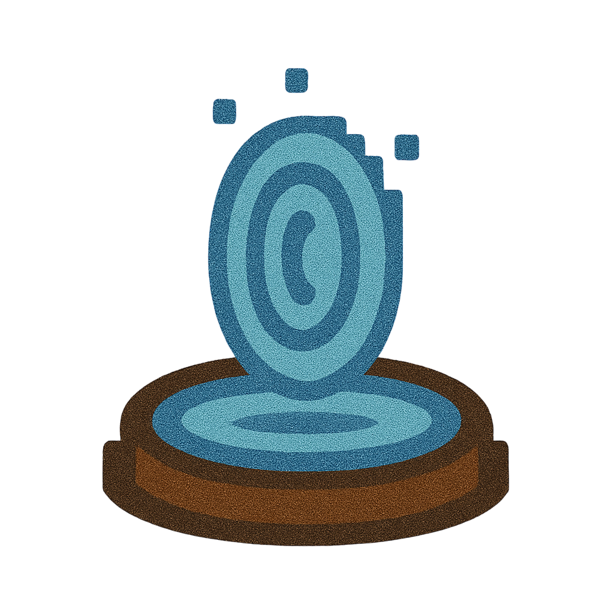 Téléporteur (magie ou technologie ? On sait pas): Entrez dedans, et POUF, vous réapparaissez ailleurs. Le rêve de tout salarié coincé à la machine à café.
- 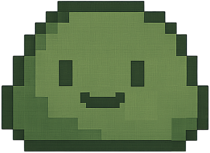 Vie Supplémentaire (cadeau du ciel) : Ramassez-la pour obtenir une vie de plus. Et non, ça ne marche pas IRL.
- 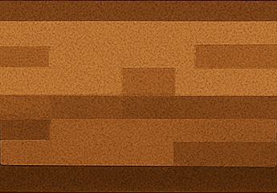 Plateforme mouvante (toujours en retard ou en avance) : Elle bouge. Vous, vous attendez. Une histoire d’amour compliquée.
- 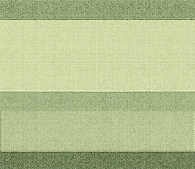 Plateforme disparaissante (spoiler : elle disparaît) : Elle vous trahit dès que vous posez le pied dessus. Comme un ami qui vous ghoste au resto.
- 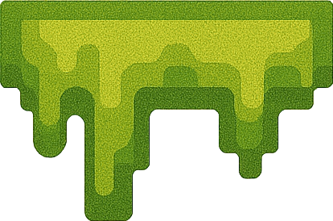 Plateforme collante (sensation chewing-gum) : Vous ralentit et réduit vos sauts. Bref, elle vous plombe le moral et le gameplay.
- 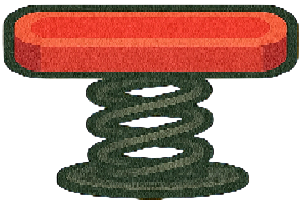 Plateforme rebondissante (effet trampoline + Red Bull) : Vous fait sauter plus haut. Idéal pour fuir les responsabilités (ou les limaces).
- 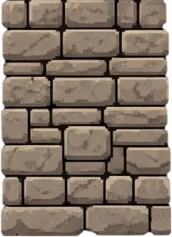 Mur (classique, mais toujours là): Il bloque. Il juge. Il vous rappelle que la vie est faite d’obstacles, et qu’il faut apprendre à… faire avec.
Crédits :
Jeu créé par Sluto, champion de l'avoine.
Inspiré par les jeux de plateforme classiques, des cauchemars de développeurs, et des Blobs sous caféine.
Images : Pixel Art du Blob 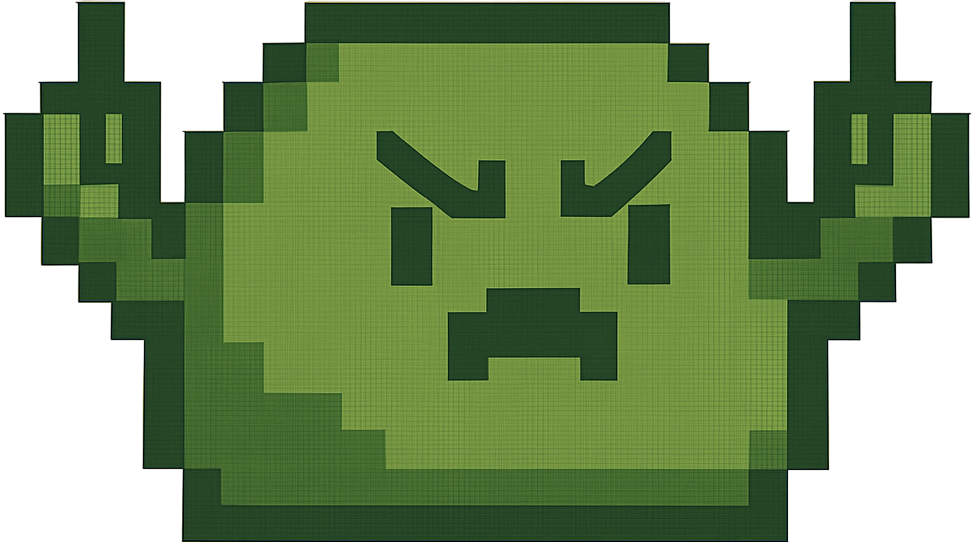
Confirmation de réinitialisation
Êtes-vous sûr de vouloir supprimer toute votre progression, mode aventure et mode jump ? Cette action est irréversible.